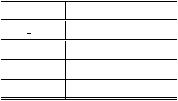
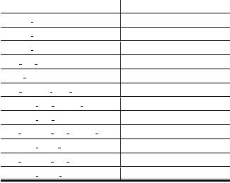
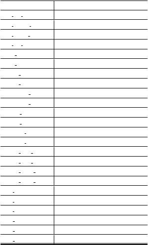

|



附录
A
该研究的数据集、源代码、及可视化链接：
原始数据存储CKAN: http://202.121.178.242/dataset/ccfbd
代码管理github：git@github:happyjane/CCFBDG
2014
可视化链接：http://data.sjtu.edu.cn:1111/
B
表
4:
时间特征
特征名称
特征意义
day
offset
事件报道时长
duration
事件报道时长
holiday
事件发生所在节日
weekday
事件发生于周几
表
5:
空间特征
特征名称
特征意义
heppen
city
事件发生城市
happen
province
事件发生省份
happen
area
事件发生地区（如华东区）
city
gdp
ranking
所在城市gdp排名
2013
gdp
城市2013年gdp总量
gdp
increase
from
2012
城市gdp增长率（2013）
province
gdp
ranking
2013
省份gdp排名
province
gdp
2013
省份gdp总量
avg
province
gdp
ranking
2013
省份人均gdp排名
province
pnum
2013
省份人口总数
avg
province
gdp
2013
省份人均gdp量
province
hanzu
ratio
省份汉族人口比例
表
6:
语义特征
特征名称
特征意义
wb
cnt
num
某事件在微博中传播到的人数
wb
person
num
事件发生省份
wb
repeat
num
某事件在微博中被重复关注的次
wb
loc
num
某事件的关注人中的地点分布数
total
news
某事件新闻报道总数
total
weibo
某事件发微博总数
media
total
某事件新闻报道（独立）媒体总数
media
origin
某事件新闻报道（来源）媒体总数
comments
news
某事件新闻评论数
comments
weibo
某事件微博评论数
quotes
news
某事件新闻转发数
quotes
weibo
某事件微博转发数
attitudes
news
某事件新闻点赞数
attitudes
weibo
某事件微博点赞数
words
med
news
某事件新闻报道长度中值
words
med
weibo
某事件微博长度中值
words
mean
news
某事件新闻报道长度均值
words
mean
weibo
某事件微博长度均值
pos
eval
新闻正情感词频数
pos
emo
正情感词频
pos
ntusd
正情感词频数
neg
eval
负情感词频数
neg
emo
负情感词频数
neg
ntusd
负情感词频数
|